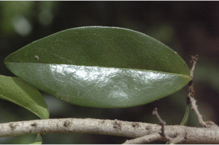
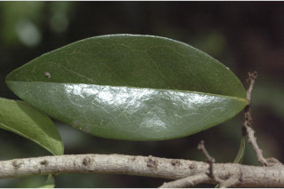
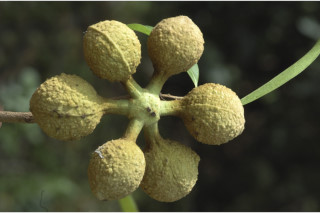
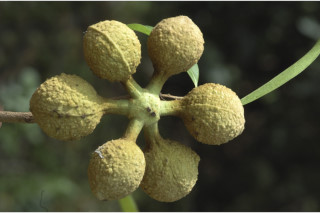

Small trees, up to 6 m tall.
30ಮೀ ಎತ್ತರದವರೆವಿಗೆ ಬೆಳೆಯುವ ಮಧ್ಯಮ ಗಾತ್ರದ ಮರಗಳು.
ആറ് മീറ്റര് വരെ ഉയരത്തില് വളരുന്ന ചെറുമരങ്ങള്.
சிறு மரம், 6 மீ. உயரம் வரை வளரக்கூடியது.
Bark finely fissured.
ತೊಗಟೆ ವಾಯುವಿನಿಮಯ ಬೆಂಡುರೂಪದ ರಂಧ್ರಗಳ ಸಹಿತವಾಗಿದ್ದು ಕೆನೆಬಣ್ಣದ ಕಚ್ಚುಗಳನ್ನೊಳಗೊಂಡಿರುತ್ತವೆ.
നന്നായി വിണ്ടുകീറിയ പുറംതൊലി.
மரத்தின் பட்டையில் மெல்லிய வெடிப்பு காணப்படும்.
Branchlets slender, terete, glabrous.
ಕವಲುಗಳು ಮತ್ತು ಕಿರುಕೊಂಬೆಗಳು ಇಳೆಬೀಳುವ ರೀತಿಯವು
നേര്ത്ത് ഉരുണ്ട അരോമിലമായ ഉപശാഖകള്.
சிறிய நுனிக்கிளைகள் மெலிந்தது, குறுக்குவெட்டுத் தோற்றத்தில் வளையமானது, உரோமங்களற்றது.
Leaves simple, alternate, distichous; petiole 0.5-0.7 cm long, glabrous, minutely pubescent; lamina 5-8 x 1.8-3 cm; lanceolate, apex obtuse, base acute to attenuate, chartaceous, glabrous; midrib flat above; secondary_nerves ca.10 pairs; tertiary_nerves coarsely reticulate.
ಎಲೆಗಳು ಸರಳ, ಪರ್ಯಾವಾಗಿದ್ದು, ಕಾಂಡದ ಎರಡೂ ಕಡೆ ಎದುರು ಬದರಿನ ಲಂಬಸಾಲಿನಲ್ಲಿರುತ್ತದೆ. ಎಲೆತೊಟ್ಟು ಕಾಲುವೆಗೆರೆ ಸಹಿತ, ಉಪ-ರೋಮರಹಿತವಾಗಿರುತ್ತವೆ. ಎಲೆ ಪತ್ರ 13-25 × 4-7.5 ಸೆಂ.ಮೀ. ದೀರ್ಘ ಚತುರಸ್ರಾಕಾರ ಭರ್ಜಿಯಾಕಾರದಲ್ಲಿದ್ದು, ಬಾಲರೂಪದ ತುದಿ, ಚೂಪಾದ ಬುಡಭಾಗ, ನಯವಾದ ಅಂಚು, ಉಪ-ಕಾಗದವನ್ನು ಹೋಲುವ ಮೇಲ್ಮೈ ಹೋಂದಿದ್ದು ರೋಮರಹಿತವಾಗಿರುತ್ತವೆ. ಮಧ್ಯನಾಳಗಳು ಪತ್ರದ ಮೇಲ್ಭಾಗದಲ್ಲಿ ಮೇಲಕ್ಕೆದ್ದಿರುತ್ತವೆ; ಎರಡನೇ ದರ್ಜೆಯ ನಾಳಗಳು 10 ರಿಂದ 30 ಜೋಡಿಗಳಿದ್ದು ತೃತೀಯ ದರ್ಜೆಯ ನಾಳಗಳು ಜಾಲಬಂಧ ನಾಳ ವಿನ್ಯಾಸ ಹೊಂದಿದ್ದು ಎಲೆದಿಂಡಿಗೆ ಅಡ್ಡವಾಗಿ ಕೂಡುವಂತಹವುಗಳಾಗಿರುತ್ತವೆ.
ഇലകള് ലഘുവും, ഇരുവശങ്ങളില് ഏകാന്തരക്രമത്തില് തിന്റെ ഒരുഭാഗത്ത് മാത്രമായടുക്കിയതുമാണ്; അരോമിലമോ ചെറുതായി രോമിലമോ ആയ ഇലഞെട്ടിന് 0.5 മുതല് 07 സെ.മി നീളം; പത്രഫലകത്തിന് 5 മുതല് 8 സെ.മി നീളവും 1.8 മുതല് 3 സെ.മി വീതിയും കുന്താകാരവും, അഗ്രം ഉപകോണാകാരവും ആധാരം നിശിതമോ നീണ്ടു നേര്ത്തതോ ആണ്, കടലാസ് പോലത്തെ പ്രകൃതവും അരോമിലവുമാണ്; മുഖ്യഞരമ്പ് മുകളില് പരന്നിരിക്കുന്നു; ദ്വിതീയ ഞരമ്പുകള് 10 ജോഡി; ക്രമരഹിതമായ ജാലിക തീര്ക്കുന്ന ത്രിതീയ ഞരമ്പുകള്.
இலைகள் தனித்தவை, மாற்றுஅடுக்கமானவை, இருநெடுக்கு வரிசையிலையடுக்கம் (டைஸ்டிக்கஸ்); இலைக்காம்பு 0.5-0.7 செ.மீ. நீளமானது, உரோமங்களற்றது அல்லது மெல்லிய உரோமங்களுடையது; இலை அலகு 5-8 x 1.8-3 செ.மீ.; ஈட்டி வடிவ இலை,அலகின் நுனி மழுங்கியது, அலகின் தளம் கூரியது முதல் அட்டனுவேட், சார்ட்டேசியஸ், கீழ்பரப்பு உரோமங்களற்றது; மையநரம்பு மேற்பரப்பில் அலகின் பரப்பிற்கு சமமானது; இரண்டாம் நிலை நரம்புகள் சுமாராக 10 ஜோடிகள்; மூன்றாம் நிலை நரம்புகள் அகன்ற வலைப்பின்னல்.
Flower fascicled on very short axillary peduncle, solitary, pedicels 0.5-0.6 cm, pubescent.
ಹೂಗಳು ತೆಳುಹಸಿರು ಬಣ್ಣದ ಹೊಂದಿದ್ದು ಅಗ್ರಸ್ಥಾನದಲ್ಲಿ ಅಥವಾ ಅಕ್ಷಾಕಂಕುಳಿನಲ್ಲಿರುವ 1 ರಿಂದ 3 ಒಟ್ಟಿಗೆ ಇರುವ ಗುಚ್ಛಕಾರ ಮಂಜರಿಯಲ್ಲಿರುತ್ತವೆ.
പൂക്കള് കക്ഷങ്ങളിലുാകുന്ന നന്നേ ചെറിയ പൂങ്കുല വൃന്തങ്ങളില് കൂട്ടമായുാകുന്നു, ഒറ്റക്ക് ഉണ്ടാകുന്ന പൂക്കളുടെ രോമിലമായ തിന് 0.5 മുതല് 0.6 സെ.മി നീളം.
மலர்கள் கூட்டமாக சிறிய மஞ்சரி காம்பில் இருக்கும், தனியானது, மலர்காம்பு 0.5-0.6 செ.மீ. உரோமங்களுடையது.
Aggregated berries, up to 6, subglobose, tomentose, tuberculate, more than 2-seeded, biseriate.
ಬೆರ್ರಿಗಳು ಗುಂಡಾಕಾರದಲ್ಲಿ ಅಥವಾ ದೀರ್ಘ ಚತುರಸ್ರಾಕಾರದಲ್ಲಿದ್ದು ಸುಮಾರು 7 ಸೆಂ.ಮೀ. ಉದ್ದವಿರುತ್ತದೆ. ಬೀಜಗಳು ಅದುಮಿದಂತಿದ್ದು 8 ರಿಂದ 10 ಇದ್ದು ಸಾಲಾಗಿ ಅಳವಡಿಸಲ್ಪಟ್ಟಿರುತ್ತವೆ.
ആറ് എണ്ണം വരെയുള്ള സഞ്ചിത സരസഫലം, ഉപഗോളാകാരം, രോമിലം, മുഴപ്പുകളുള്ളതും, 2-ല് കൂടുതല് വിത്തുകള് ഒരു നിരയായി അടുക്കിയിരിക്കുന്നു.
கொத்தான முழுச்சதைகனி (பெர்ரி), 6 வரை இருக்கும், கோளவடிவானது, உரோமங்களுடையது, கழலைகளுடையது, இரண்டுக்கு அதிகமான விதைகள், இரண்டு வரிசையிலானது.


 


 
